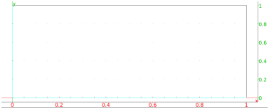
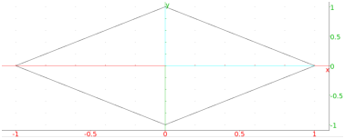

13.10.2 Regular polygons in the plane: isopolygon
See Section 14.9.2 for regular polygons in space.
The isopolygon command creates regular polygons.
-
isopolygon takes three arguments:
-
A,B, two points.
- k, a nonzero integer.
- isopolygon(A,B,k returns and draws the regular
|k|-sided polygon with one side AB. If k > 0, then the
polygon will continue counterclockwise; if k < 0, then it
will be clockwise.
Examples.
-
Input:
isopolygon(0,1,4)
Output:

Input:
isopolygon(0,1,-4)
Output:
